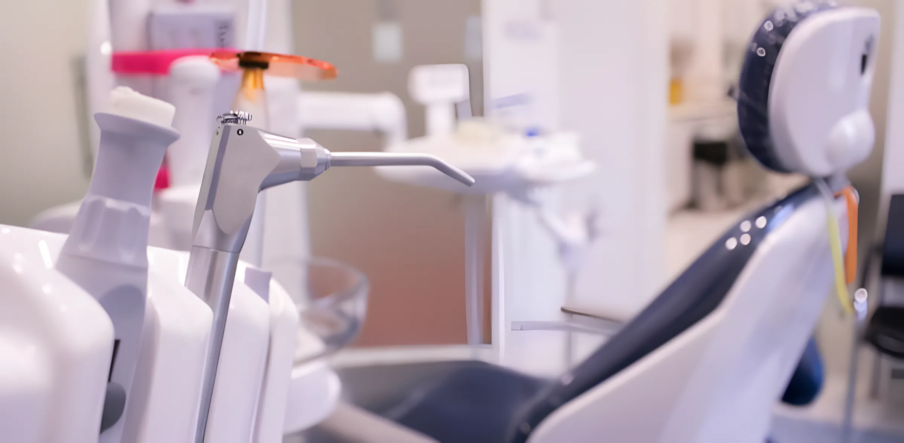
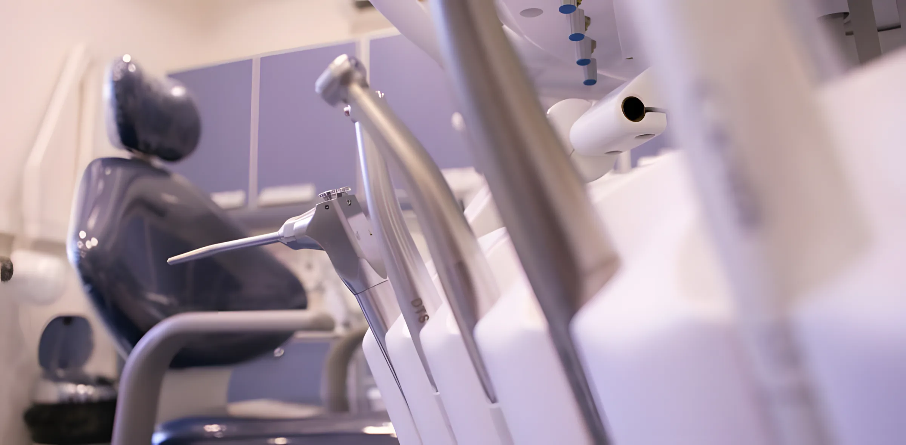
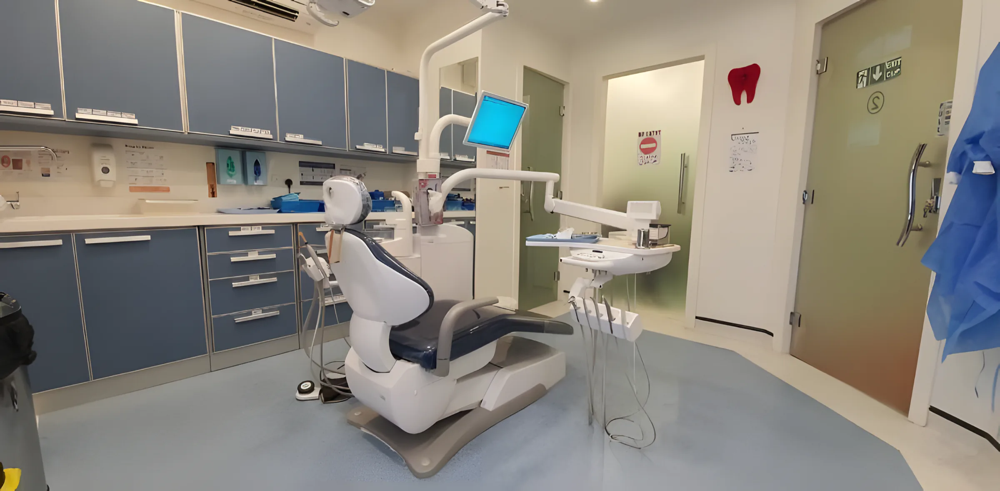
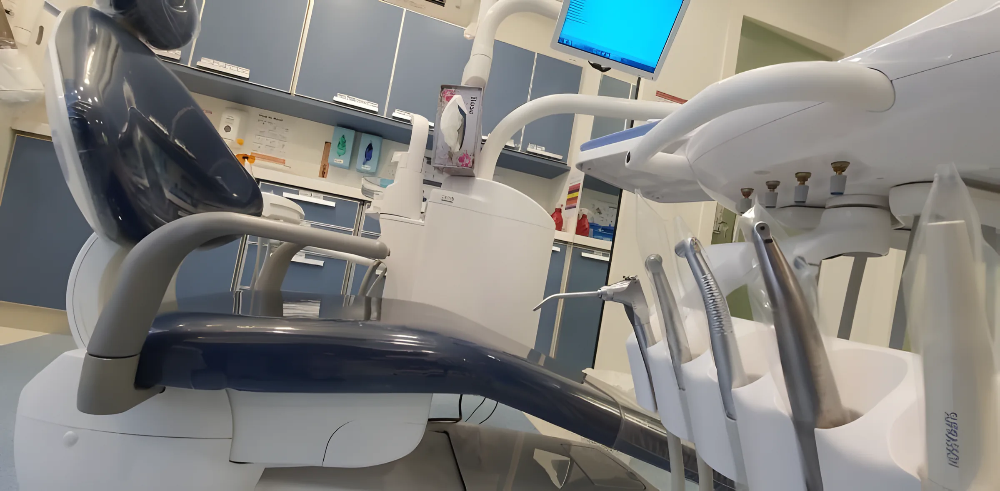
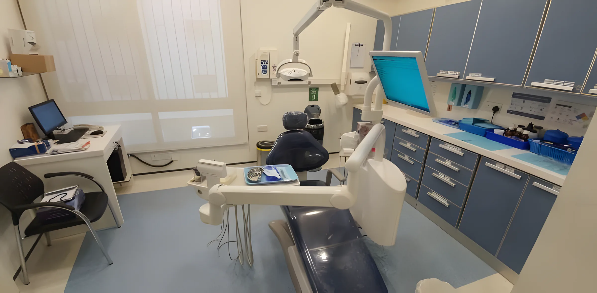
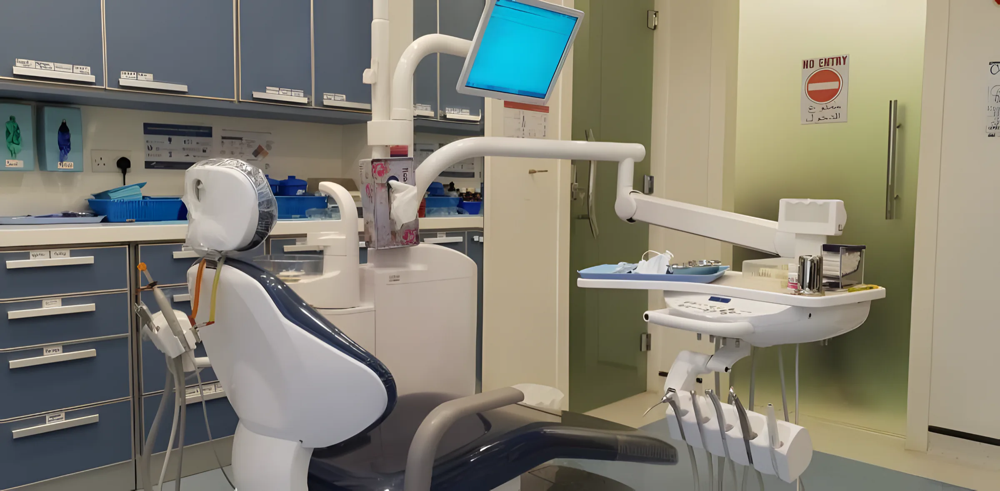
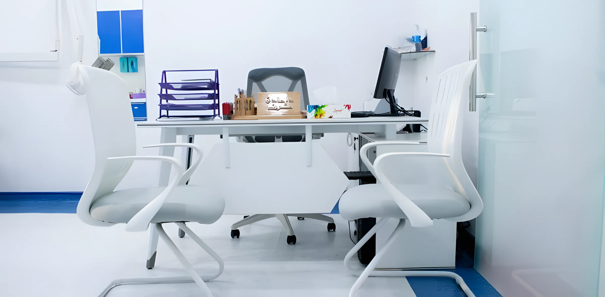
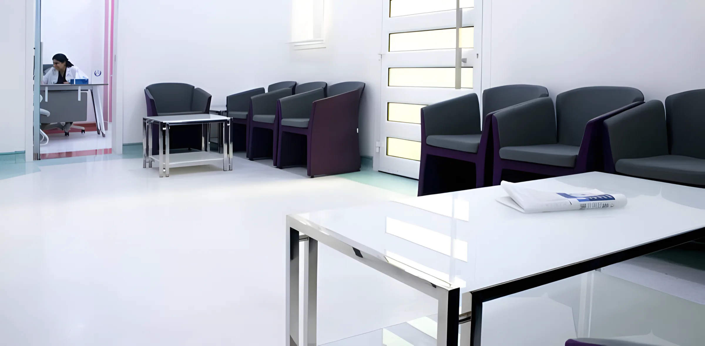
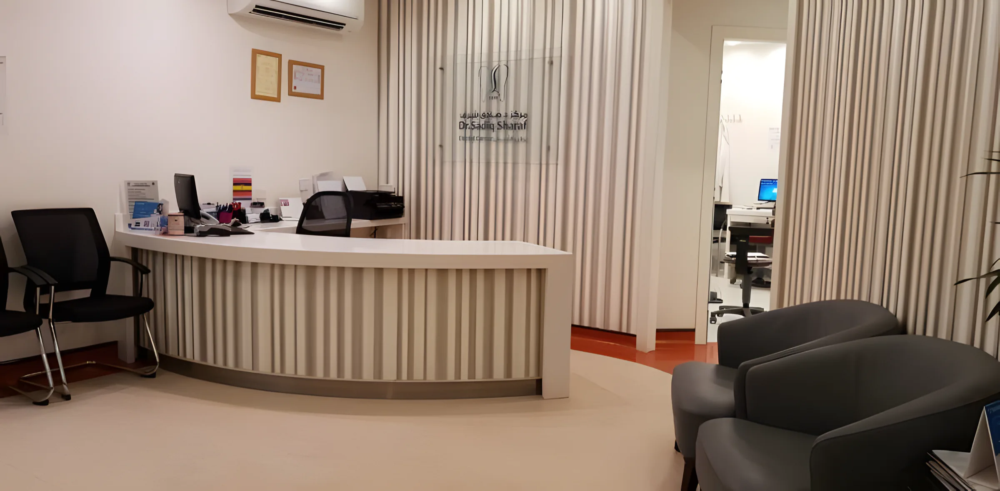
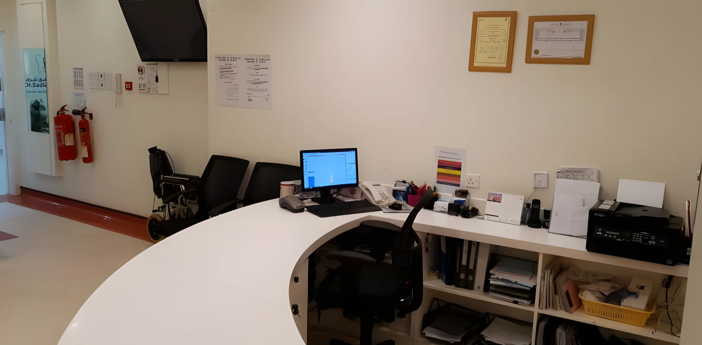

العلاجات بالتفصيل عشرة أقسام وفريق واحد في الرفاع الشرقي والبديع. الاستشارة بـ 10 دنانير، ونقبل بطاقات التأمين الرئيسية، ونخبرك بالخطة والتكلفة قبل البدء.
01 الفحص02 التجميل03 الحشوات04 علاج العصب05 الزراعة06 التركيبات07 التقويم08 الأطفال09 اللثة والليزر10 ألم الفك؟ أسئلة
01 · الطب الوقائي الفحص والتنظيفالعناية بالأسنان لتبقى سليمة: بلا تسوس ولا أمراض لثة ولا تآكل. افحص أسنانك مرة في السنة على الأقل، وأكثر إذا كانت أسنانك معرضة للمشاكل. نكتشف المشكلة وهي صغيرة، حين يكون علاجها سريعاً وأوفر.
تنظيف الجير والتلميع يزيل البلاك والجير الذي لا تصل إليه الفرشاة.
سد الشقوق طبقة رقيقة على أضراس الأطفال تمنع التسوس.
الفلورايد يقوي المينا، خاصة للأسنان في مرحلة النمو. 
02 · تجميل الأسنان ابتسامة هوليوود والتبييضإذا كانت أسنانك مصطبغة أو مكسورة أو متآكلة أو بينها فراغات، نحسّن ابتسامتك بعلاج واحد أو أكثر. نخطط معك أولاً.
القشور (ابتسامة هوليوود) قشور رقيقة على الأسنان الأمامية، وهي تخصص د. صادق.
التبييض في العيادة الأسرع والأكثر فعالية، بعد التأكد من خلو الأسنان من الجير.
طقم التبييض المنزلي للمحافظة على اللون بعد التبييض، ونشرح لك طريقة الاستخدام. اطلب د. صادق شرف أو د. مريم مدن.

03 · الحشوات الحشوات والترميمنخدر المنطقة، نزيل التسوس، ننظف السن ونحشوه بلون يطابق أسنانك. الحشوات ترمم أيضاً الأسنان المكسورة والمتآكلة من الصرير أو قضم الأظافر.
حشوات بلون السن راتنج مركب بنفس درجة لون أسنانك.
إغلاق الفراغات إغلاق الفراغات الصغيرة بين الأسنان الأمامية بمادة بلون السن. 
04 · علاج العصب علاج قناة الجذرعلاج العصب ينقذ السن المتضرر أو الملتهب بدل خلعه: نزيل اللب الملتهب، ننظف القنوات ونعقمها، ثم نحشوها ونغلقها. مع التخدير الحديث يكون مثل الحشوة تقريباً. ألم أو تورم؟ لا تتأخر.
علاج قناة الجذر تنظيف وتعقيم وإغلاق داخل السن.
قطع ذروة الجذر إجراء صغير عند طرف الجذر حين لا يكفي علاج العصب وحده. اطلب Dr. Bhargav Penubadi أو د. زهراء الخباز.

05 · جراحة الفم الزراعة والخلعأغلب العمليات تحت التخدير الموضعي. الزرعة تعوض جذر السن المفقود ثم يركب فوقها تاج، ويحتاج العظم أشهراً ليلتئم حولها.
زراعة الأسنان بديل للطقم أو الجسر غير المريح.
خلع الأسنان ومنها ضرس العقل. د. صادق شرف حاصل على ترخيص امتياز الزراعة من NHRA.

06 · التركيبات التيجان والجسور والأطقملتعويض الأسنان المفقودة أو حماية الضعيفة منها. ثابتة أو متحركة، على أسنانك أو على الزرعات.
التيجان غطاء للسن المتضرر، من الخزف أو السيراميك بلون أسنانك.
الجسور تملأ الفراغ بالاستناد إلى الأسنان المجاورة.
الأطقم كاملة أو جزئية، متحركة. 
07 · تقويم الأسنان التقويم وInvisalign الأسنان المعوجة أصعب في التنظيف وترهق الفك. نفحص بالأشعة والصور ونقترح الحل المناسب لك، في أي عمر.
التقويم الثابت للازدحام والاعوجاج والعضة الأمامية أو الخلفية.
Invisalign قوالب شفافة تغيرها بالترتيب، عادة من سنة إلى سنتين، وتنزعها وقت الأكل والتنظيف. اطلب Dr. Manjula، أخصائية التقويم.

08 · طب أسنان الأطفال أسنان الأطفالفم الطفل صغير وأسنانه تتغير وصبره قصير. نعرّفه على طبيب الأسنان بهدوء حتى يشعر بالأمان، ونحب أن نراه كل ستة أشهر.
حشوات بيضاء حشوات قوية بلون السن للأسنان اللبنية.
بتر اللب واستئصاله لإنقاذ السن اللبني حين يصل التسوس إلى العصب.
حافظات المسافة تحفظ مكان السن اللبني إذا سقط مبكراً. اطلب د. مريم مدن.

09 · اللثة والليزر اللثة والليزرالجير تحت خط اللثة لا يزيله إلا التنظيف عند الطبيب، وإذا ترك يسبب التهاب اللثة ثم أمراضها. ونستخدم الليزر في عدة إجراءات للثة.
علاج اللثة تنظيف عميق للجذور في حالات النزيف والانحسار.
قص اللثة بالليزر إزالة أو تشكيل اللثة الزائدة، عادة من 30 إلى 60 دقيقة.
علاج التقرحات علاج تقرحات الفم بالليزر. 
10 · مفصل الفك ألم الفكمفصل الفك يعمل كمفصلة على جانبي الوجه. الألم أو الطقطقة قد تأتي من الصرير أو الضغط أو الالتهاب أو إصابة. أغلب الحالات تتحسن بعلاج بسيط دون جراحة.

قبل زيارتك أسئلة شائعةهل تقبلون التأمين؟ نعم، من شركات التأمين الرئيسية في البحرين مثل Mednet وHealth 360 وBNI وGlobeMed وNextCare وAXA وGEMS وGulf Union.
هل يمكن الدفع بالبطاقة؟ نعم، البطاقات الائتمانية وبطاقات الخصم.
كم رسوم الاستشارة؟ كيف أحجز موعداً؟ اتصل بفرع الرفاع على 17 772700 17 696688
هل يتوفر كرسي متحرك؟ نعم، نوفر كرسياً متحركاً لذوي الاحتياجات الخاصة. أخبرنا عند الحجز.